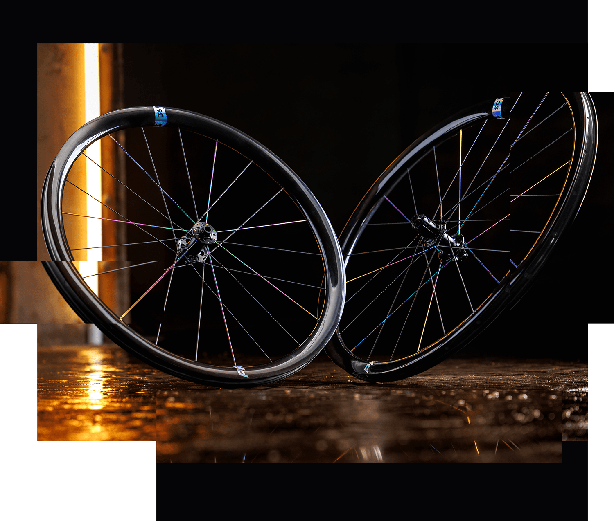
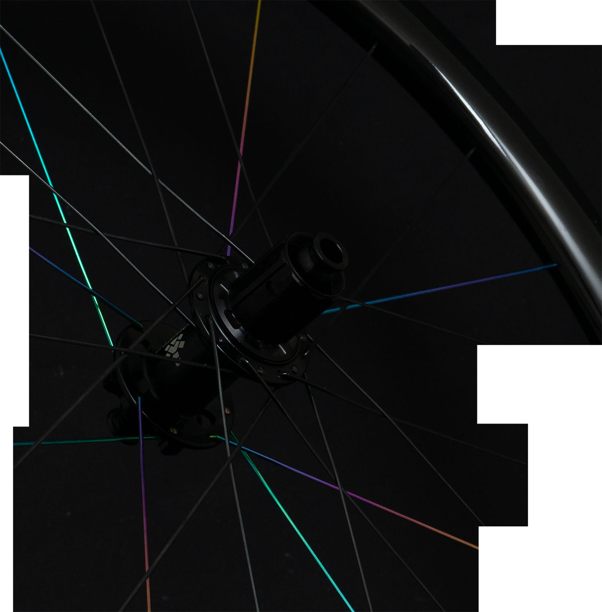
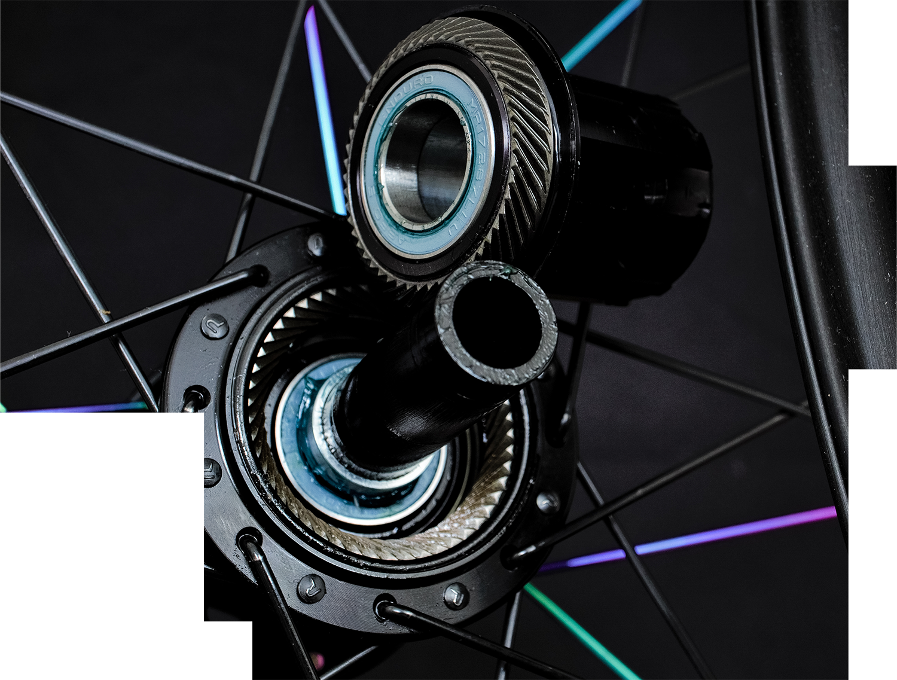
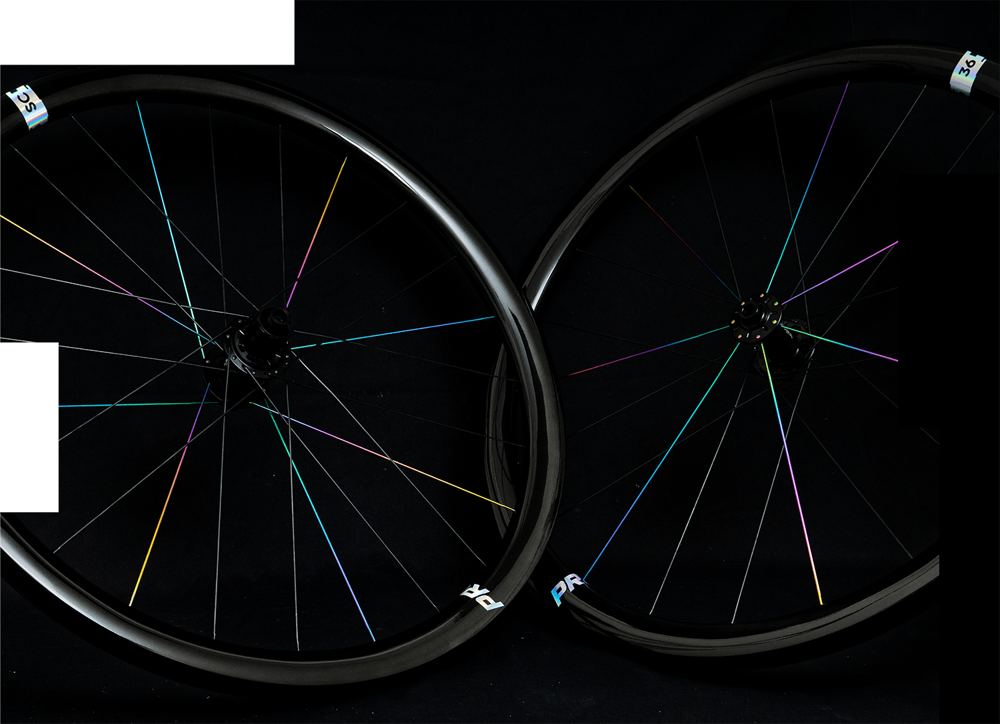
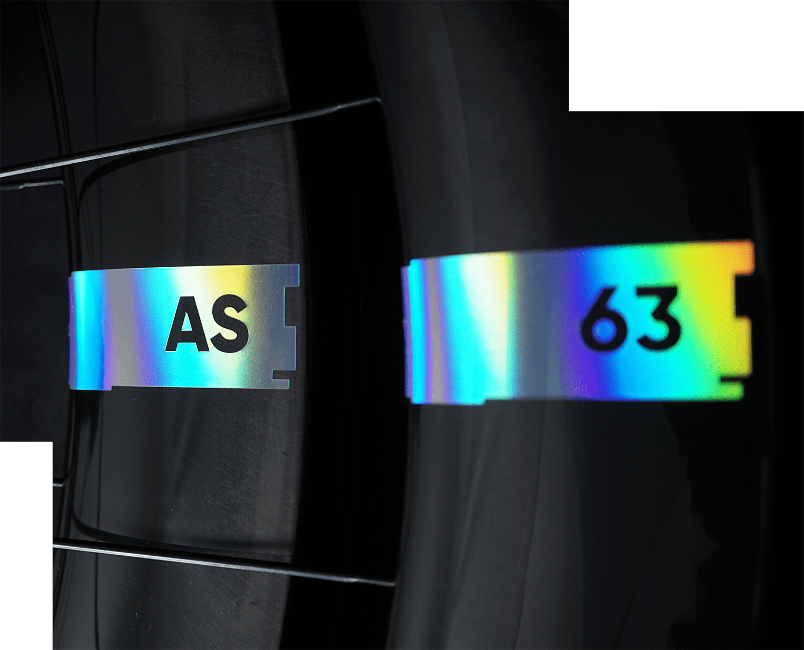

Die Mission: Systemlaufrad versus Laufradsystem
Ein Systemlaufrad verfolgt ein legitimes Ziel: Es werden alle Komponenten mit eigenem Branding und Spezifikationen versehen um die größte Kundengruppe anzusprechen.
Das Protens®️ Laufradsystem verfolgt auch ein legitimes Ziel. Werte wie Fahrerlebnis, Effizienz, Geschwindigkeit, Lenkpräzision und Spritzigkeit gepaart mit Haltbarkeit sind das Versprechen! Alle Komponenten werden systemisch nach dieser Philosophie entwickelt und gefertigt.
Das Ziel ist nicht der Marktführer mit dem besten Produkt zum kleinsten Preis und der größten Menge zu werden sondern ganz einfach das beste Laufrad zu bauen.

Echte Spezialisierung ermöglicht das performanteste Laufradsystem! Die Protens®️ Philosophie besteht darin, ganzheitlich das Konzept Laufrad zu erfassen und zu evaluieren. Überlegene Mechanik, höchst-präzise Aufbauqualität und Ästhetik sind unser Fundament.
Haftung auf Schotter, haltbar für Abenteur und Reise auf groben Pfaden, und so schnell auf Asphalt dass es dir ein Grinsen ins Gesicht zaubert!
Erfahre deinen Sport neu! Wir halten unser Versprechen.

Mechanische
Überlegenheit
Ermöglicht wird dein Fahrerlebnis durch mechanisch überlegene Einspeichmuster die kombiniert werden mit selbst entwickelten Felgen. Diese verfügen über optmierten Faserlagen um den Einspeichmustern gerecht zu werden. Im Ergebnis ist das Laufrad effizienter, aerodynamischer, haltbarer und kurz gesagt überlegen schnell.
Fahrstil: Gravel / Road · Felge: SC36 Hooked TLR Clincher, Toryaca T800H Faser; Interne Nippel, 21L / 24L Triplet · Dimensionen: Innen: 24.75mm, Aussen: 32.7mm, Höhe: 36mm, 410g · Naben: Trailmech Gravel/Road 12*100 / 12 * 142 ISO / Shim 11s/12s / XDR / N3W · Speichen: Pillar Racing Spoke Wing 20 / Wing 21 belastungsgerecht · Gewicht: VR 651g HR 806g
Naben-
technologie
Im Zentrum befindet sich bei Protens®️ Laufrädern Trailmech Naben mit einem einzigartigen Freilaufmechanismus. Helisch-konische Zahnscheiben erzeugen einen progressiven Kraftschluss, vergleichbar mit dem eines Schraubengewindes. Im Ergebnis laufen die Kugellager frei da kein Biegemoment auf die Achse der Nabe wirkt. Höhere Effizienz und massiv gesteigerte Haltbarkeit sind das Ergebnis. So einzigartig, dass es unter der Nummer DE112017007405T5 patentrechtlich geschützt ist und ist ein weiteres Alleinstellungsmerkmal für Protens®️


Hol dir jetzt deinen Laufradsatz!
Du möchtest einen SC36 Gravel Laufradsatz fahren oder hast Fragen zu weiteren Produkten? Wir freuen uns darauf von dir eine Email zu bekommen!
Bestellung aufgebenDas Gesammte Protens® Laufradprogramm
Für die verschiedenen Radsportdisziplinen und Einsatzzwecke sind weitere Laufradsätze erhältlich. Details hierzu folgen in Kürze.
Road
AS35 / AS43 / AS47 / AS50 / AS63
MTB XC
G30 / G30 27.5"
Gravel
SC24 / SC25 / SC36 / SC47 /
SC35 650b / AS40 Tubular
MTB AM
G30 / G30 27.5"
